Overview
Actions in this section can be performed only after Zebra DNA Cloud (ZDNA) has been set up by an organization. If necessary, please follow instructions in the ZDNA Setup Guide before returning to this section.
After a DNA Cloud instance is created for an organization, administrators can begin creating and deploying device settings and performing other administrative tasks. These tasks are performed by admins and managers subject to the rules and behaviors below:
- Super Admin (formerly "Tenant Owner"):
- Created with each new instance of Zebra DNA Cloud
- No more than one Super Admin is allowed per organization or instance
- Requires registration at Zebra.com
- Log into DNA Cloud using Zebra SSO credentials
- Able to create users in the "Admin" or "Manager" role and perform all other admin duties. Learn more about User Roles.
- Manager:
- Created and maintained by Super Admin or a user assigned the Admin role
- Can perform all routine administrative duties
- Can access all features except user administration
- Requires registration at Zebra.com and use Zebra SSO credentials for access to DNA Cloud
All users are automatically logged out after 30 minutes of inactivity.
Admin Requirements
- At least one set of Administrator credentials:
- ZDNA Administrator (SSO) credentials (obtained during ZDNA Setup)
- One or more Zebra devices running Android 11 (or later) updated with the latest device-specific software.
- Devices must be licensed for access to all system features (see Setup -> New Device Setup).
NOTICE: Devices intended to be fully managed using Zebra DNA Cloud must perform a factory reset before enrollment into the system to ensure that all features work correctly. This is not applicable to devices managed using a third-party EMM solution and that use Zebra DNA Cloud to deploy Zebra apps and OS updates, monitor battery health and perform other administrative functions.
About Barcode Scanning
Scanning barcodes from a monitor or device screen can cause difficulty decoding due to light reflection. To help alleviate this, turn off illumination and/or enable LCD mode on the device. See DataWedge Reader Params for more information.
For best results, Zebra recommends scanning barcodes only from printed materials.
My Devices
Devices can be fully managed in the ZDNA system only after they have been enrolled and licensed* in the system. To enroll devices in ZDNA for the first time, see Enroll Devices in the Setup Section. The device information displayed in this section is updated as indicated below.
Every 24 Hours:
- Android version
- Battery information
Every 10-11 Minutes:
- Device Presence (see Presence Usage Notes, below)
- Last Connected timestamp
As soon as server processing allows:
- Device name
Naming Conventions
- Setup Profile (App Setup Profile) - A group of settings relating to an app and/or one or more app configuration files.
- Settings Profile - A group of settings for configuring one or more devices.
- Job - A task to update the Android version running on one or more devices.
* Some management features are available without a device license.
Device Presence
DNA Cloud 5.0 (and later) displays presence information for all ZDNA-managed devices as well as GMS devices enrolled in third-party EMM systems. Presence reporting is subject to the rules and behaviors listed below. Devices must contain the latest ZDNA client app and an update to network settings is required.
Click image to enlarge; ESC to exit.
Presence Usage Notes
- Presence information is displayed for all ZDNA-managed devices and EMM-enrolled† GMS devices.
- Last Connected status shows as "Active within last 24 hours" for devices until their enrollment steps are completed.
- Presence could take up to 24 hours to display for devices that were:
- Enrolled before the required network settings were configured.
- Updated to the latest DNA Cloud client app before required network changes were configured (see below).
- Enrolled in a third-party EMM system.
- After network settings are updated:
- Newly enrolled devices display presence information immediately.‡
- Currently enrolled devices display presence immediately after performing “Update zDNA client” action.‡
- Devices with an out-of-date ZDNA client (indicated by ) must be updated to the latest version for presence display.
- Presence info for devices running an unsupported/outdated OS is displayed after device is updated through “Android Updates” and “Update zDNA client” actions.
- Presence status changes...
- ...from offline to online appear immediately in most cases but could take up to five minutes.
- ...from online to offline appear after about 10 minutes along with an updated "Last Connected" timestamp (see image above).
- If the ZDNA service and/or its dependent components are terminated by the Android system due to a lack-of-memory condition, the system attempts to automatically recover when memory becomes available. Presence information for such devices reappears about 15 minutes after recovery.
† Devices managed by a third-party EMM system require Zebra Common Transport Layer 2.1 or later. Available from Google Play
‡ “Last Connected” status is displayed about 10 minutes after enrollment and/or device update.
Column Selection
ZDNA 3.2 introduced the ability to select which columns to show/hide on most device-listing screens. When the feature is available, a Column Selection button appears on the screen as seen below:
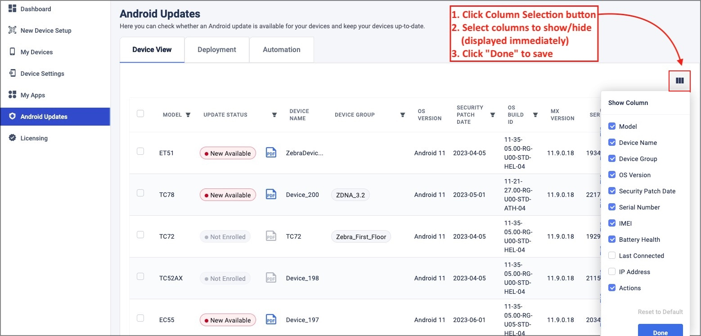
Click image to enlarge; ESC to exit.
To Select Columns:
- Click the Column Selection button to display the current selections (default = all).
- Select a column to show/hide by checking/unchecking its checkbox. Results are displayed immediately.
- Click "Done" to preserve the selections for later use. See note, below.
Clicking away from the Column Selection box dismisses the box, temporarily displaying the latest selections. After clicking away from the screen, temporary changes are lost. Upon return, the last-saved column selections are displayed. If no preferences were previously saved, all columns are displayed (default).
Device Actions
Numerous actions can be executed remotely from the My Devices screen. See Available Actions (below) for a more complete list.
 Click image to enlarge; ESC to exit.
Click image to enlarge; ESC to exit.
The actions listed below are executed only on devices that are powered up and online when the action is issued.
To create durable actions that execute the next time the device is available, see Device Settings section.
Available Actions
- Remote Support - initiates a remote-control session with the device.
- Reboot Device - quits all apps and restarts the device.
- Lock Device - immediately activates the Lock Screen.
- Reset Device Passcode* - removes any existing swipe pattern, PIN or password.
- Submit XML † - presents a text box for pasting machine-generated XML and sending to selected device(s) for execution.
- Wipe Device - resets the device to its factory-fresh state, permanently erasing all user apps and data.
- Delete Device ‡ - removes zDNA client app from device, de-enrolls device from ZDNA system; other apps and settings on device remain unchanged.
Optionally performs a Factory Reset, returning device to factory-fresh state. - Update zDNA Client - checks the client app on the device and pushes an update, if necessary.
- Reapply - redeploys a settings Profile, usually after addressing "Issues" or a change of device availability (expires after 7 days).
- Locate Device** - gathers GPS data from a selected device, opens a new tab and displays device location on a Google Map.
- Export - writes device information from all devices in the My Devices section (10,000 max.) to a
.csvfile on the host computer. See next section.
* Has no effect if user changed passcode before ZDNA enrollment. To regain control, perform an Enterprise Reset on device and re-enroll.
† No feedback is provided as to the success or failure of this action.
‡ Deleted devices could remain visible in deployment detail documents if the device was selected for deployment before being deleted.
** A license is required for this feature. Supported only on GMS devices without restrictions. Learn about GMS Restricted Mode. NOT supported on WS50.
Export My Devices Data
On My Devices page, click the "Export" button to begin.
Status changes from "In-Progress" to "Completed" once data collection is complete.
Click "Download" on the desired job to continue. The current export job status is displayed along with the two most recently completed export jobs (if applicable).
Click image to enlarge; ESC to exit.Navigate to the desired file location and click "Save" button (not shown).
Click image to enlarge; ESC to exit.
My Devices data for all devices (10,000 max.) is saved to a .csv file in the selected location for further processing and/or backup. Exports are subject to the behaviors listed below.
Export Notes
- Export function collects device information for all devices on the My Devices page (10,000 devices max.).
- All device information is exported regardless of device selection, shown/hidden columns, filters, etc.
- The download button for each dataset is activated after all My Devices data is collected.
- The DNA Cloud system retains a maximum of three export-job files; older files are deleted automatically.
- Data is saved as a
.csvfile to the selected location on the host computer. - Export jobs are user-specific; each user sees only their own list of datasets.
- Export button is disabled if no My Devices data has been created.
- File generation status messages:
- In-Progress: The export file is being generated.
- Failed: An error occurred while generating the export file. Try again.
- Completed: The export file was generated successfully and is available for download.
- Attempting to initiate an export while another is "In-Progress" results in an error.
Device Actions (bulk)
Selecting one or more devices activates the "Bulk Actions" button:
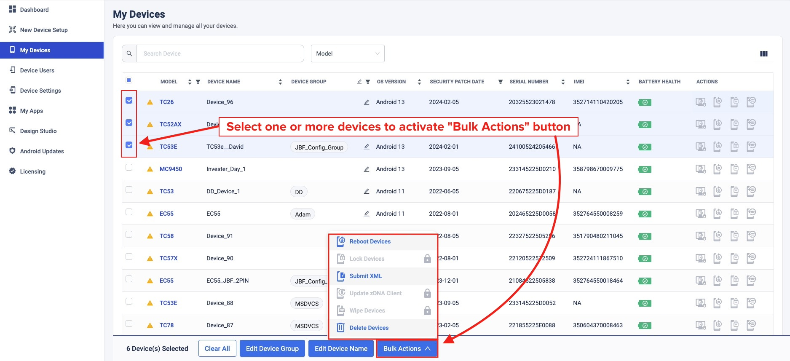
Click image to enlarge; ESC to exit.
Click on a Device name to display its details.
The device name and its Group association can be edited here and Groups can be created:
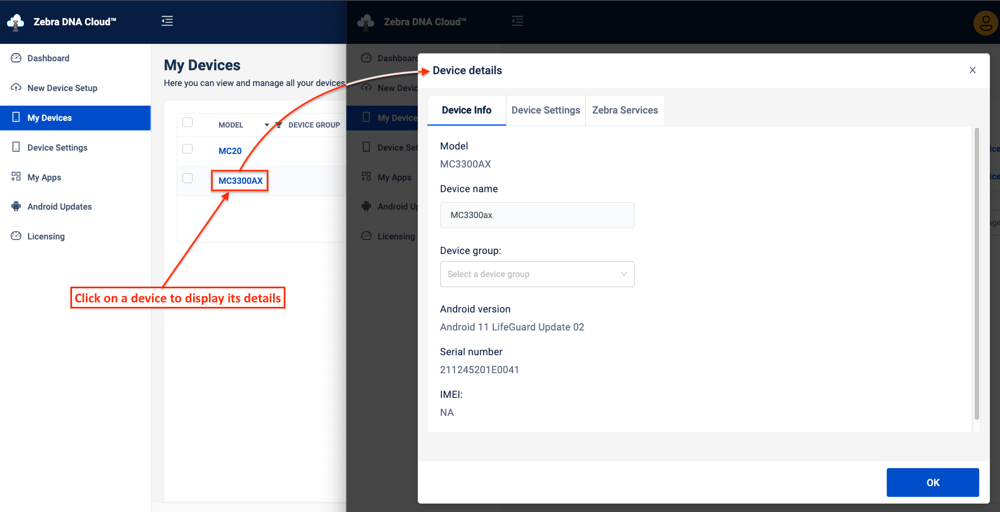
Click image to enlarge; ESC to exit.
Note: Adding a device to a Group automatically deploys settings associated with that Group to the device.
The Device Settings tab lists the settings Profile history for the device:
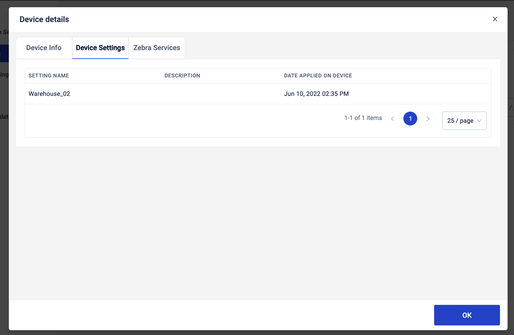
Click image to enlarge; ESC to exit.
The Zebra Services tab lists the zDNA-relevant services running on the device:
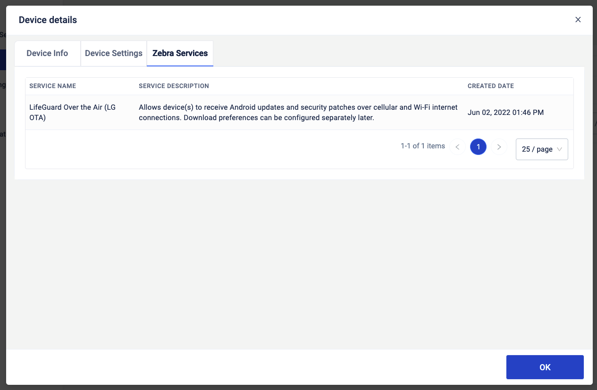
Click image to enlarge; ESC to exit.
Bulk Auto-naming
Device names also can be automatically renamed as a bulk action. Devices renamed in this way are named and numbered according to the Auto-naming Behavior below.
Select two or more devices in My Devices screen and select "Edit Device Name" button: Click image to enlarge; ESC to exit.
Enter the desired device name prefix in the dialog and click "Apply" to rename. 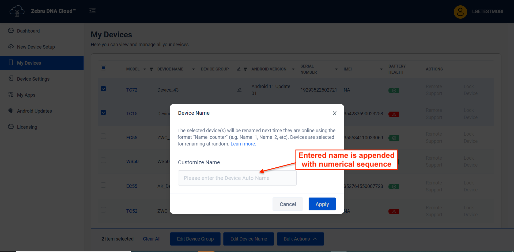 Click image to enlarge; ESC to exit.
Device Auto-naming
Devices can be named using a custom alphanumeric prefix and a numerical sequence applied automatically upon enrollment or at any time thereafter. This can help simplify the naming of devices intended for a similar purpose. For example, devices intended for use in a warehouse might be tagged "Warehouse" and automatically named "Warehouse_1," "Warehouse_2," etc.
Auto-naming Behavior
- The counter begins at "_1" with each new, unique device name prefix.
- If an entered prefix is NOT unique, numbering begins with the next greater number in the existing sequence.
- If an auto-named device is deleted, its number is NOT reused for devices auto-named later.
- If an automatically named device is deleted or otherwise un-enrolled, it receives a new number when re-enrolled.
- Devices are auto-named according to their enrollment date, from newest to oldest.
- Characters supported for prefix naming:
- Alphanumeric characters Aa–Zz and 0–9
- Special characters dash (-) and underscore (_)
- Devices offline when an auto-naming action is applied are renamed next time they come online.
Device names must be no longer than 25 characters in total length.
To Use Device Auto-naming
- Create a Device Settings Profile.
- In the Basic Properties step, enter the desired prefix in the Device Naming section:
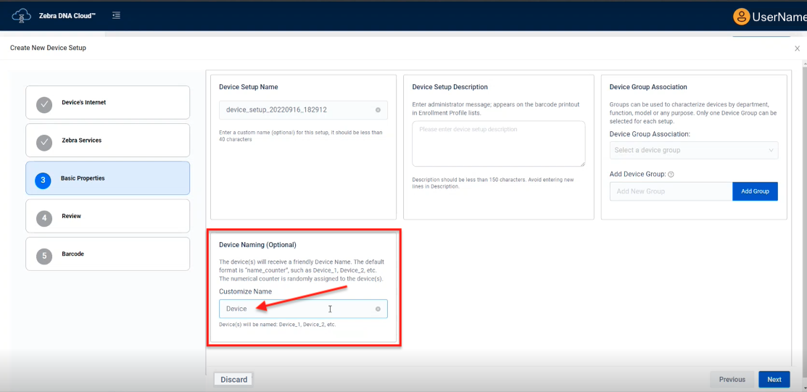
Click image to enlarge; ESC to exit.
- Complete the Device Settings Profile as described in that section.
All devices receiving this Profile are named using the entered prefix, and are automatically appended with an underscore and the next number in the sequence.
Remote Support
On devices with zDNA client 1.2 (or later), the device screen can be viewed and controlled remotely. On devices with DNA Cloud v2.7 (or later) and running Zebra Workstation Connect software, administrators can access both the device screen and the screen of a connected external monitor.
The Zebra TC53, TC58 and other 6490-platform devices require the May 2023 LifeGuard update to allow remote access to an external monitor.
If supported on a device, the "Remote Support" Action is available:
Click image to enlarge; ESC to exit.
Clicking on the "Remote Support" link opens a new window that displays the device screen and device information and allows the device to be controlled remotely through the browser window:
Click image to enlarge; ESC to exit.
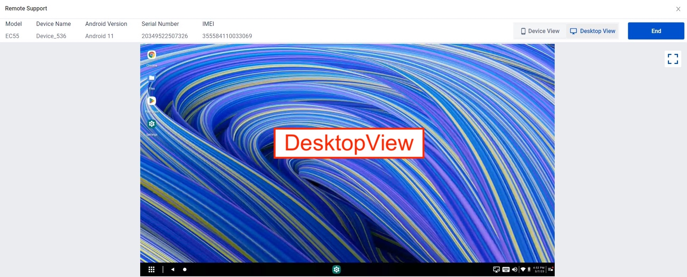
Click image to enlarge; ESC to exit.
Requirements
- Zebra Workstation Connect (ZWC) must be installed and running on any device to be remotely controlled.
- The ZDNA Client MUST be the Device Owner for support of Desktop Mode.
- The ZWC Desktop Mode must be enabled and the device restarted (if not previously enabled). See Advanced Settings or OEMConfig for more info about enabling Desktop Mode.
- A high-speed, low latency network and minimal geographic distance between the administrator console and the remote device.
Remote device support requires a network of around 100 Mbps with latency less than 15 ms for the best user experience. Use of cellular networks is not recommended for remote support.
Remote Do's and Don'ts
- DO:
- Use the latest ZDNA device app (2.7.0.1 or later) for proper RC operation
- Use keyboard shortcuts (CTRL-X, CTRL-C, CTRL-V) for cut/copy/paste functions
- Double-click to zoom in or out on remote-device screens and images
- Use arrow and enter keys on PC keyboard to work with remote folders and files
- Use the highest possible bandwidth for remote support sessions
- DON'T:
- Don't quit or disable the "Screencast" app on the device when a remote session is active
- Don't refresh, press BACK or close the remote support window when a session is starting up (see Notes, below)
- Don't use browser shortcuts (CTRL+N, CTRL+SHIFT+N, CTRL+F, CTRL+G, CTRL+W) in a remote session
- Don't switch from Desktop View to Device View (or vice-versa) without waiting at least five (5) seconds between switches
- Don't initiate Remote Support sessions on cellular or other low-bandwidth connections
Remote Support Notes
- SDM660-platform devices require the Feb. 2023 (or later) LifeGuard build for remote access the Desktop screen.
- An SSO user (Administrator) must log into the zDNA console at least once to enable Managers to access Remote Support features.
- A remote session requires at least 15 seconds to start up.
- To unlock a remote device with a screen lock set to "Swipe," use the mouse to drag upward on the remote screen image.
- Wait at least five (5) seconds after disconnecting a remote session before starting new session with same device.
- The "Files" app on the device does not respond to single- or double-clicks on folders or files (use arrow and enter keys on PC keyboard to work with remote files).
- Remote sessions automatically time-out after five (5) minutes of inactivity.
Known Issues
- NOT supported when viewing/controlling the Desktop:
- Screen rotation or Portrait mode (supports only Landscape Desktop orientation)
- Mouse right-click functions
- Alt+F4, Print Screen or WIN-L key commands
- Google Chrome "Incognito" mode on a device or desktop (screen appears all black)
Troubleshooting
The Remote Support feature relies on WebSockets for communication between the administrative console and Zebra servers. For proper operation, this connection must not be interrupted or blocked.
If trouble arises, check for blockages in the administrator's browser or network implemented by one or more of following:
- Ad or cookie blocker (as a browser setting or extension)
- Antivirus or firewall software
- Blocking of any Twilio domain
- Proxy and VPN connections
- Other network restrictions implemented by IT
Zebra recommends re-checking required network settings if troubles persist.
Search Devices
ZDNA 3.8 and later allows admins to search for enrolled devices by the categories shown below (see image).
Search text must begin with the first character(s) of the string being searched. For example, searches by "Model" for TC-type device models must begin with "TC" to produce usable results.
Click image to enlarge; ESC to exit.
Device Settings
As in Zebra StageNow, Zebra DNA Cloud employs the concept of Profiles, which are collections of device settings and/or apps that configure devices to behave in a certain way or to enable workers to perform particular sets of tasks.
Zebra DNA Cloud also implements device Groups, allowing administrators to deploy a Profile associated with that Group simply by adding devices to the Group. For example, a Group called "Warehouse" might be created for devices configured to connect with specific access points in the company's warehouse and to receive the company's apps for inventory control and order picking activities.
When a Group is associated with a settings Profile, all devices added to that Group automatically receive the settings in that Profile. See additional Profile and Group behaviors below.
Profile and Group Behavior
- A Group can have only one Profile, but a Profile can be applied to more than one Group.
- Profiles remain in effect until deleted and are applied immediately to devices that come online.
- When adding devices to a Group, device licensing is verified before applying non-Zebra app- and/or device-settings Profile(s) associated with that Group.
- Groups can be created and devices added during enrollment or at any time thereafter.
- Devices added to a Group automatically receive the settings in the Profile associated with that Group.
- A device can belong to only one Group at a time.
- Removing a device from a Group cancels deployment of any pending settings Profiles.
- Deleting a Group or removing a device from a Group DOES NOT remove settings Profile(s) previously applied.
- Deleting a device from a Group DOES NOT remove apps previously installed.
- Deleting a Profile cancels deployment of any jobs "in progress" for that Profile, but does NOT remove past deployments.
- The Bulk Delete Action supports no more than 20 Device Settings Profiles at a time.†
- As many as 100 devices can be added to a Group at a time.
- Device Settings features accessible without a DNA Cloud license:
- Users with "Edit" permission can import and export Profiles.
- Users with "View Only" permission can export Profiles; "Import" feature requires a license.
- Create, view and edit Profiles features are determined by assigned user role; "Assign Setting" feature requires a license.
- Converting any Profile to a Sub-profile (for use in a Master Profile) deletes the original Profile. To prevent this, duplicate the Profile first.
† Following this action, a page refresh is required to update the pagination count.
Mixed Device Owners
Zebra DNA Cloud also can manage devices for which the DNA Cloud client is not the Device Owner. This allows administrators to manage "mixed-owner populations" of devices—some owned by ZDNA, others owned by the company's EMM system—together in the ZDNA console. This gives administrators access to numerous ZDNA features, including those listed below.
- Administrators managing mixed-owner populations can perform the following Actions:
- Remote support (except devices managed by SOTI)
- Device Reboot
- Other supported* activities:
- Create StageNow enrollment Profiles
- Manage device inventory
- Install and configure Zebra apps
- Design keyboard layouts for Zebra Enterprise Keyboard
- Perform Android updates and deploy security patches
- Generate logs with Remote RxLogger
- Analyze Wi-Fi and cellular performance with Wireless Insights
Mixed-owner Population Notes
- Admins with device populations enrolled ONLY in third-party EMM systems (with no DNA Cloud-managed devices), CANNOT configure device settings using ZDNA.
Such devices appear “greyed out” in device lists and a warning is displayed on "Target Devices" pages. - Installations of Zebra-branded apps from Google Play can fail if a lower "initial version" is preinstalled on the device.
For more information and a possible solution, see related FAQs.
- Managed configurations accept an optional Group Name† for tagging during EMM enrollment; subject to the following behaviors:
- The specified Group Name must match exactly with a pre-existing name in DNA Cloud.
- Group Names are case sensitive; missing or mismatched names are ignored (field remains blank).
- Group Names must be accompanied by the corresponding configuration token.
- Group Names assigned in this way can be changed later through the ZDNA console or the EMM system.
* Supported on licensed devices.
† Requires DNA Cloud 3.16.1 or later.
Create Settings Profile
To begin, go to the Device Settings section and select the settings type under the "New Settings" button:
• Wizard - Presents configuration parameters with the most common options pre-selected (shown with Step 1 below)
• Advanced - Presents all available configuration parameters with default options selected (shown with Advanced Settings section below)
 Click image to enlarge; ESC to exit.
Click image to enlarge; ESC to exit.
Use Settings Wizard
The Settings Wizard presents the most common configuration parameters and pre-selects the most common options.
IMPORTANT: If the security screen Lock Type is set to "Pin" and the Screen Lock Quality is set to "Numeric" (through the Settings Wizard), the setting cannot be changed to "Swipe" unless the Screen Lock Quality setting is first set to "Do not change" through the Wizard.
To Create a Profile with Settings Wizard:
1. Configure Language/Locale and Date/Time settings as desired and click "Next" to continue.
For manually setting device date/time:
a. Check "Use cellular network-provided date and time" box.
b. Check "Use NTP..." box and enter NTP server address.
c. Check either "Use cellular..." OR "Customize time zone" and "Custom time zone" from the dropdown.
Device date/time can now be set manually.
Setting of automatic date/time is not currently supported.
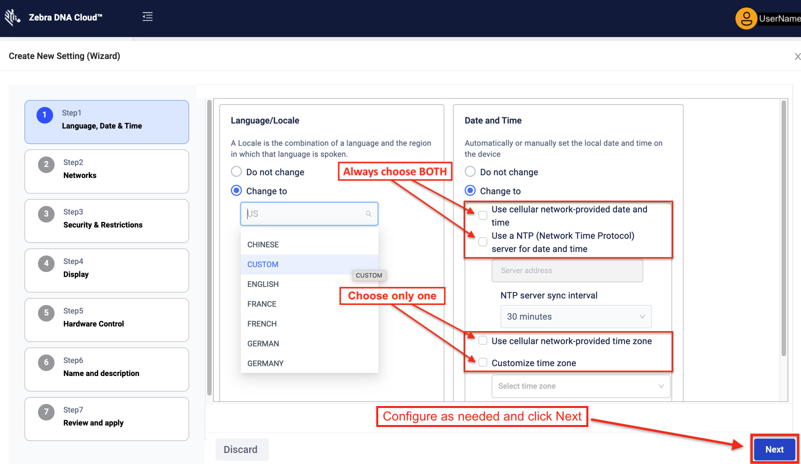
Click image to enlarge; ESC to exit.
2. Configure Networks as desired and click "Next":
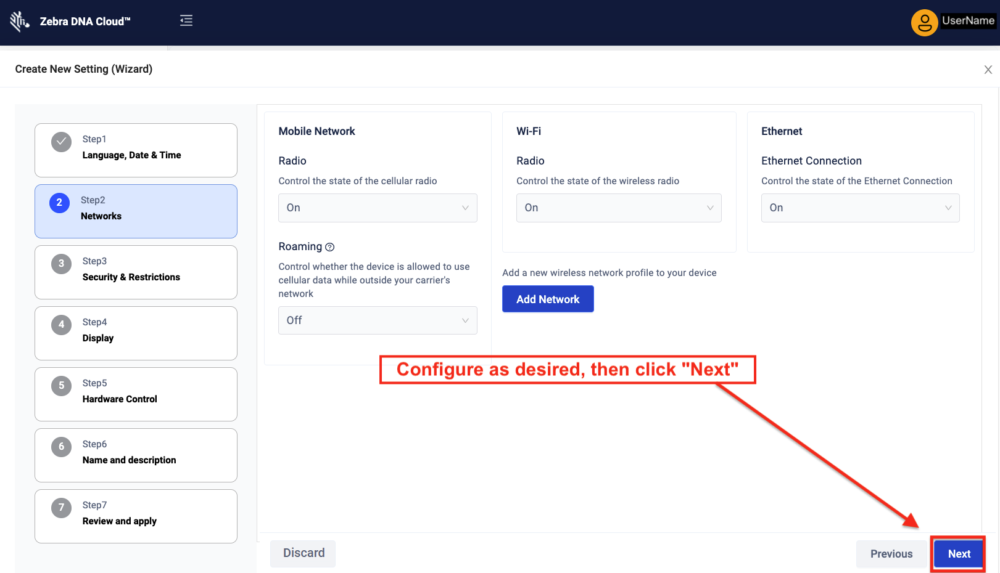
Click image to enlarge; ESC to exit.
3. Configure Security settings as desired and click "Next":
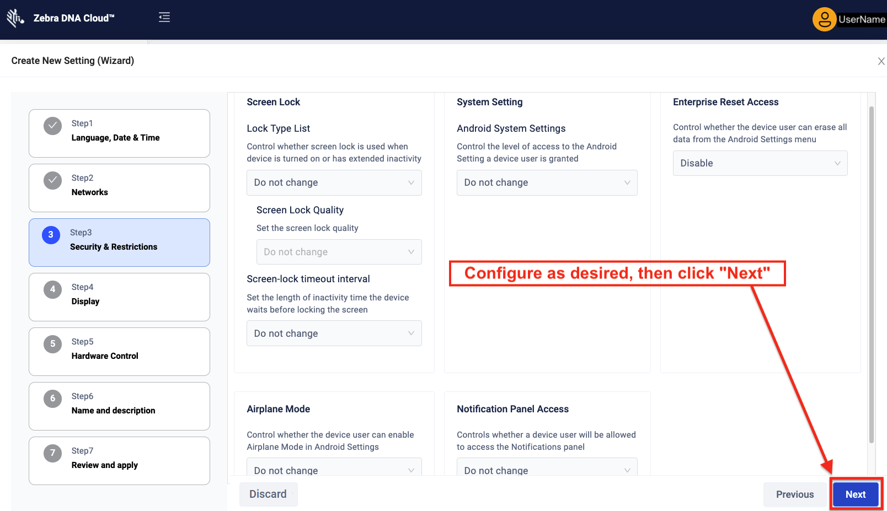
Click image to enlarge; ESC to exit.
4. Configure Display settings as desired and click "Next":
Click image to enlarge; ESC to exit.
5. Configure other hardware settings as desired and click "Next":
Click image to enlarge; ESC to exit.
6. Enter a Name for this settings Profile or accept the auto-generated name.
Add a short description to help identify the Profile in the future.
See Device Auto-naming for more information.
Click "Next" when finished:
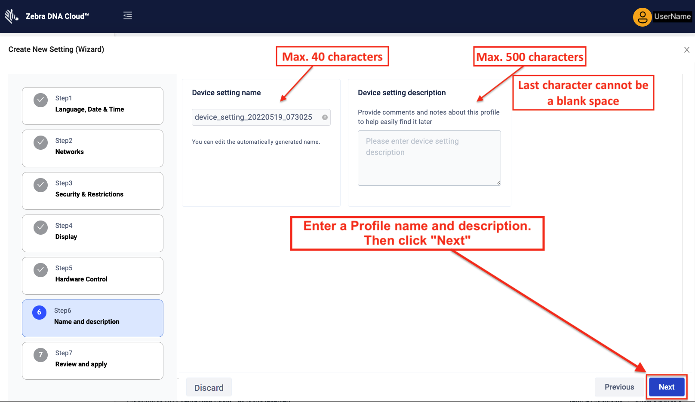
Click image to enlarge; ESC to exit.
7. Review all settings and edit as needed.
To create a Sub-profile (formerly known as a "Template") for Profile Deployment, click "Save as Sub-profile." Otherwise, click "Apply Now" to proceed:
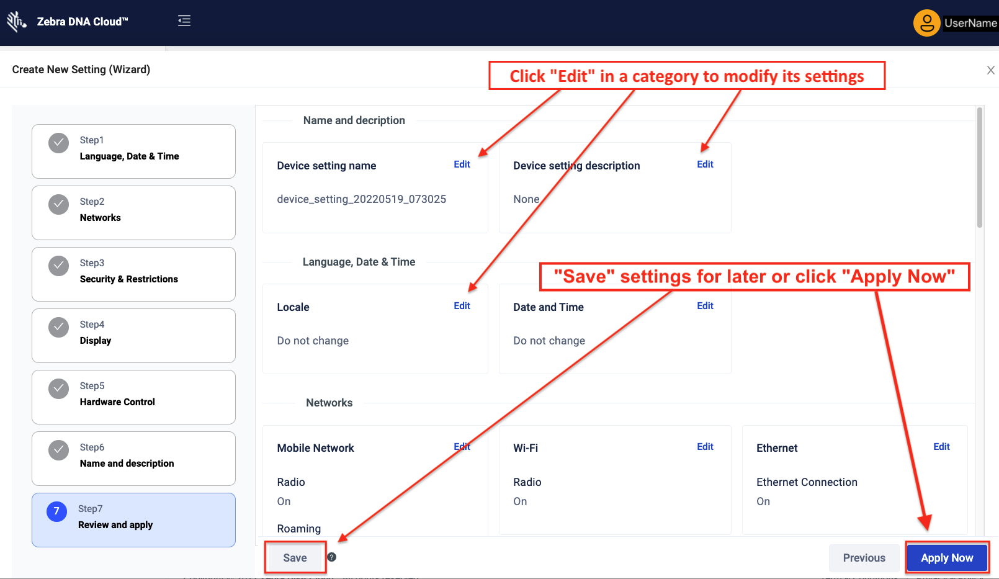
Click image to enlarge; ESC to exit.
8. Select target device(s) and/or Groups to receive the Profile.
Click "Apply" to deploy immediately:
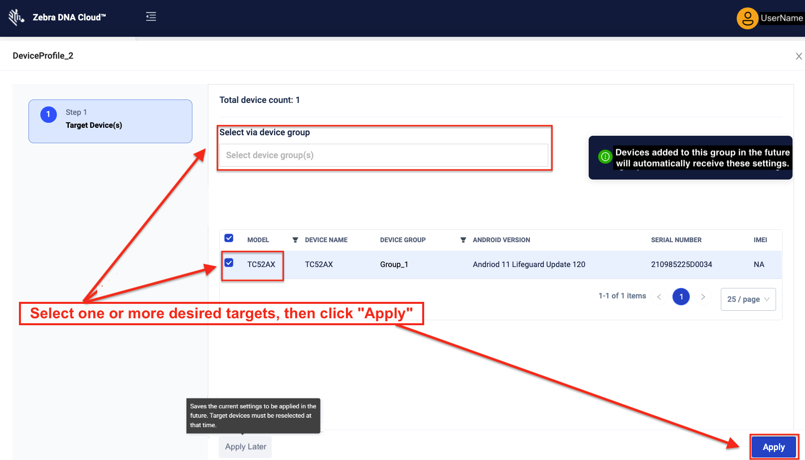
Click image to enlarge; ESC to exit.
9. Monitor progress of settings deployments in the Device Settings landing page:
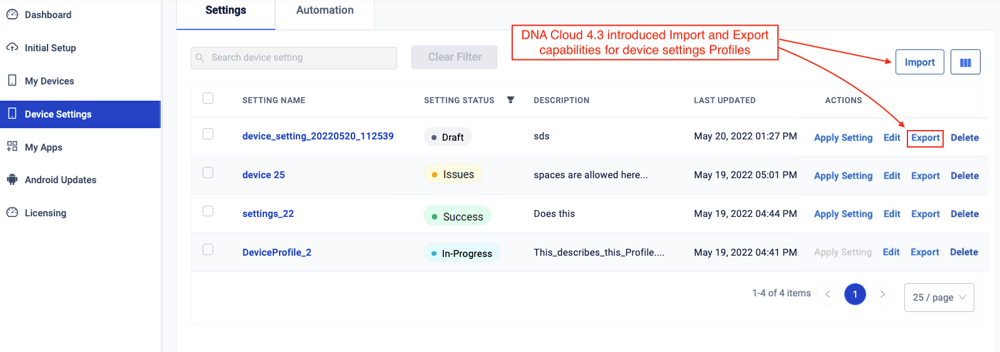
Click image to enlarge; ESC to exit.
10. To export a Profile, click "Export" in the Action column of the desired Profile. Then select the desired export format and click the "Download" button:
• .pdf outputs a "StageNow" barcode file for scanning on a device and/or distributing electronically. Supports only PDF417 format. See notes, below.
• .xml outputs XML code for deployment with an EMM system, or pushed to devices with the "Submit XML" Device Action or using OEMConfig XML pass-through.
• .dprof exports the Profile, which can be imported by another DNA Cloud instance and edited as needed.
 Click image to enlarge; ESC to exit.
Click image to enlarge; ESC to exit.
11. To import a Profile exported as above, click the "Import" button and navigate to the .dprof file.
Import / Export Notes
- Imported Profiles appear in the same list as those created in DNA Cloud.
- Users with a "View Only" role can export Profiles only; importing is not permitted.
- When using a Settings Wizard, "Browse Image" (e.g. Custom Wallpaper) features are not supported for export; imported Profiles must be edited and images applied manually.
- When using Advanced Settings:
- Secure Logging Passwords are NOT supported for export of
.xmlor.pdffiles.
(see System Configuration > Logs Configuration > Control Secure Logging & Control) - Stream configuration is NOT supported for export of
.pdffiles.
(see UI Configuration > Volume UI Profiles > Volume UI Profile > Stream configuration) - Exported barcodes support only:
- Scanning with StageNow app on devices running Android 11 or later.
- PDF417 (2D) format; linear barcodes are not supported.
DNA Cloud 4.1 (and later) displays additional data about settings status, including a timestamp showing when a Profile was created, and if applicable, when the Profile was last modified and/or applied, along with the user name of the person who created the Profile, and if applicable, who last modified and/or applied it:
Click image to enlarge; ESC to exit.
DNA Cloud 4.2 (and later) enables Remove and Reapply functions for Bulk Actions directly from Device Settings section.
Click image to enlarge; ESC to exit.
Status Definitions
- Success (green) - Deployment to device(s) completed on device(s) as expected
- Failed (red) - Deployment did not succeed, possibly because:
- The Profile never reached the device
- One or more settings are not supported by the device(s)
- In Progress (blue) - Deployment is pending on at least one device; no errors have occurred
- Issues (yellow) - Partial success; one or more problems are preventing full deployment
- Draft (black) - Profile is unfinished or awaiting deployment
- Unknown - Status could not be determined, possibly because all devices have been removed from Profile
- Enabling, Not Enabled (grey) - Indicates LifeGuard status on devices
More about Profile and Group Behavior
Client Update Warning
A banner and icons (similar the image below) alert administrators when one or more target devices contain out-of-date client software or were enrolled with a barcode created using an older version of the DNA Cloud console.
Click image to enlarge; ESC to exit.
During deployment, settings are deployed only to targets with the latest client software. Devices with out-of-date client software are skipped.
> Zebra recommends updating client software on all target devices prior to Profile deployment.
Use Advanced Settings
This section presents all available configuration parameters with default options pre-selected.
Zebra advises caution when selecting options in this section to avoid unwanted behavior when reapplying the Profile. For example, the "Wipe Data Option" can result in a perpetual "In-Progress" status message. See Known Issues for more information.
To Create a Profile with Advanced Settings:
Click on the title(s) to select the MX settings group(s) to be configured. Click image to enlarge; ESC to exit.
Hover mouse pointer over "info" icon to reveal parameters in each Settings group. Click image to enlarge; ESC to exit.
To search managed configurations, click in the Search box and type a key word. Parameters that contain the word are displayed in a drop-down for selection (as below). Repeat until all required parameters are listed in the right-hand pane.
Changes to managed configurations DO NOT cause device reboot (ZDNA 3.1+). Click image to enlarge; ESC to exit.Click "+" to expand the group and expose its parameters.
It might be necessary to scroll down to see all parameters and options.
Configure parameter options as desired.
Click "Next" when finished: Click image to enlarge; ESC to exit.Enter a Name for this settings Profile or accept the auto-generated name.
Add a short description to help identify the Profile in the future.
Click "Next" when finished: Click image to enlarge; ESC to exit.Review all settings and edit as needed.
Click "Apply Now" or "Save" to proceed: 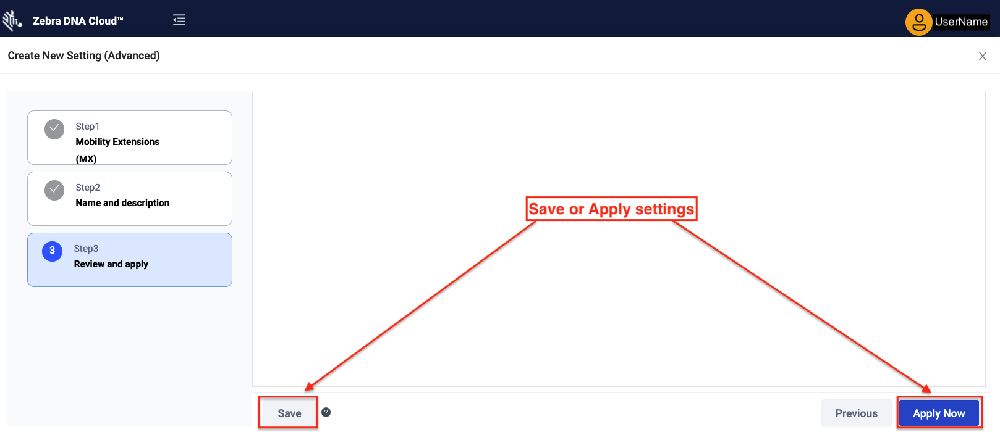 Click image to enlarge; ESC to exit.Select target device(s) and/or Groups to receive the Profile.
Click "Apply" to deploy immediately: Click image to enlarge; ESC to exit.Monitor progress of settings deployment in the Device Settings landing page: Click image to enlarge; ESC to exit.
Status Definitions
- Success (green) - Deployment to device(s) completed on device(s) as expected
- Failed (red) - Deployment did not succeed, possibly because:
- The Profile never reached the device
- One or more settings are not supported by the device(s)
- In Progress (blue) - Deployment is pending on at least one device; no errors have occurred
- Issues (yellow) - Partial success; one or more problems are preventing full deployment
- Draft (black) - Profile is unfinished or awaiting deployment
- Unknown - Status could not be determined, possibly because all devices have been removed from Profile
More about Profile and Group Behavior
Client Update Warning
A banner and icons (similar the image below) alert administrators when one or more target devices contain out-of-date client software.
Click image to enlarge; ESC to exit.
During deployment, settings are deployed only to targets with the latest client software. Devices with out-of-date client software are skipped.
> Zebra recommends updating client software on all target devices prior to Profile deployment.
Change Device Group
From the "My Devices" screen, click on the pencil icon in a device's row to manage the Group it belongs to:
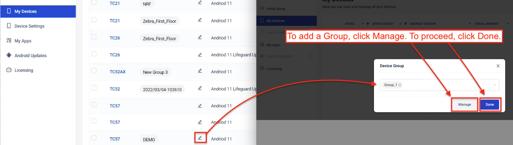
Click image to enlarge; ESC to exit.
This action might effect device licensing. NOTE: A device can belong to NO MORE than one Group at a time.
Battery Health
Zebra DNA Cloud monitors and reports battery health for Zebra devices equipped with PowerPrecision and PowerPrecision+ batteries and the latest version of the zDNA client app. For quick reference, battery health for each device is indicated using icons on the "My Devices" screen similar to the image below.
 Click image to enlarge; ESC to exit.
Click image to enlarge; ESC to exit.
Battery health status indicators
- Green - Health is Good
- Yellow - Health is Fair
- Dark Grey - Unknown or Unsupported Battery
Click on a Device Name in the "Model" column (above) to display its details (below), including battery health and additional battery information:
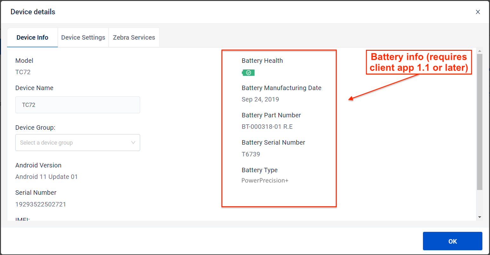
Click image to enlarge; ESC to exit.
Battery health factors
The following data are used to calculate the relative health of PowerPrecision+ and PowerPrecision batteries.
- PowerPrecision+
- Green: Health percentage from 80%–100% ‡
- Yellow: Health percentage is less than 80% ‡
- Dark Gray: Health not determined; unsupported or unknown battery
- PowerPrecision
- Green: Fewer than 400 charge cycles
- Yellow: 400–499 charge cycles
- Dark Gray: Health not determined; unsupported or unknown battery
‡ Health percentage is represented as the ratio between the "present_capacity" of the battery and its "design_capacity" at a discharge rate equal to the "design_capacity."
Battery Notes
- Battery information reporting requires the latest zDNA client app on the device.
- For client update information, see "Update zDNA Client" under My Devices.
- For more information about battery health and maintenance, see Battery Manager.
- Battery health reporting not supported on TC15 or TN28 devices.
Device Users
The Device Users section allows admins to view the identities, device-access method(s), usage activities and other information relevant to users of Identity Guardian, Zebra's biometric device authentication solution. Device users that enroll in Identity Guardian are automatically populated into the Device Users section, giving ZDNA administrators the ability to perform the actions listed below.
ZDNA 5.8 (and later) allows admins to create and/or import Identity Guardian users. See Manage IG Users in the Setup Guide for more information.
Click image to enlarge; ESC to exit.
- Delete - Removes user(s) from the system and blocks their access to device usage.
- Expire - Blocks user access to devices; retains user information.
- Export - Gathers and writes all Identity Guardian user data to a
.csvfile on the host computer (see below).
Click image to enlarge; ESC to exit.
User data available for display is listed below, with defaults shown in bold. Click the "Show Columns" button to select the desired data to display.
- Employee ID
- Security Type(s)
- User Type
- Valid Through
- Created On
- Created By Device
- Created By S/N
- Last Log-In
- Last Log-In Device
- Last Log-In S/N
- Enrollment ID
- Actions
Export User Data
On Device Users page, click the "Export" button to begin data collection.
Status changes from "In-Progress" to "Completed" once data collection for the current job is complete.
Click "Download" on the desired job to continue. The current export job status is displayed along with the two most recently completed export jobs (if applicable).
Click image to enlarge; ESC to exit.Navigate to the desired file location and click "Save" button (not shown). Click image to enlarge; ESC to exit.
Data for all device users is saved to a .csv file in the selected location for further processing and/or backup. Exports are subject to the behaviors listed below.
Export Notes
- Export function collects device information for all users on the Device Users page.
- All user information is exported regardless of user selection(s), shown/hidden columns, filters, etc.
- The download button for each dataset is activated after all device user data is collected.
- The DNA Cloud system retains a maximum of three export-job files; older files are deleted automatically.
- Data is saved as a
.csvfile to the selected location on the host computer. - Export jobs are user-specific; each user sees only their own list of datasets.
- Export button is disabled if no device user data is present.
- File generation status messages:
- In-Progress: The export file is being generated.
- Failed: An error occurred while generating the export file. Try again.
- Completed: The export file was generated successfully and is available for download.
- Attempting to initiate an export while another is "In-Progress" results in an error.
Profile Deployment
ZDNA 5.9 introduced sequential deployment, under which multiple app setup and device settings Profiles can be grouped into a Master Profile. Master Profiles enable administrators to deploy multiple Profiles to devices in a specific sequence, ensuring that prerequisite configurations are prioritized. This feature introduces the concept of Sub-profiles, which are specialized versions of Device-setting and App-setup Profiles that can be arranged in a Master Profile to simplify complex deployments and help ensure success.
ZDNA 5.10 (and later) supports duplication of existing Profiles for use in sequential deployments without losing the original Profile and its settings. After duplication, original Profiles remain intact, and can still be deployed separately as needed.
WARNINGS and KNOWN ISSUES:
- Devices previously targeted by any Profile for App Setup or Device Settings MUST be disassociated from those Profiles before being targeted by a Master Profile.
- Zebra Collection apps must support the Android version on the device to which they are deployed.
- Profile Deployment supports only ZDNA-enrolled devices; this feature is not supported on third-party EMM systems.
- Devices targeted by a Master Profile before deployment appear only in the first Sub-profile. After deployment, targeted devices appear in all relevant Sub-profiles.
- App Setup Profile names do not appear on Device Details page if the app setup was deployed as a Sub-profile.
- Some deployments result in concatenation of device model, devicename and serialnumber fields on Profile Dependency pages.
Master Profile Features
- Sub-profiles - Formerly known as "Templates," Sub-profiles can include Device Settings Profiles, App Setup Profiles or both. Sub-profiles cannot be applied directly to devices; they work only when deployed through a Master Profile.
- Failure Handling - Allows deployment to be halted upon failure, impacting only the affected device(s); others proceed unaffected.
- Access Control - Compatible with ZDNA user roles to control access to Master and Sub-profiles:
- Edit - Users can create, view, edit and delete Profile Deployments.
- View-Only - Users can view the Profile Deployments page but cannot edit its contents.
- No Access - Users are unable to view the Profile Deployments page.
- Drafts - Enables full or partial deployments to be created and stored for use in the future.
- License - Devices must have a DNA Cloud license to be targeted by a Master Profile.
Master Profile Status
- In-Progress – The deployment is actively processing each Sub-profile in order. Execution of the next Sub-profile begins only after the current Sub-profile’s status updates to “Success” or “Issue.” During this phase, actions such as “Edit” and “Delete” are disabled for both the Master Profile in Profile Deployments and Sub-profiles in Device Settings and App Setup.
- Success – The deployment completed successfully.
- Issue – A failure occurred while processing the Profile, resulting in an incomplete deployment.
- Draft - For Master Profiles, the deployment is saved as a draft and can be completed at a later time. For sub-profiles, the Profile is in queue to be deployed.
- Template - Refers to Sub-profiles, indicating that deployment has not yet occurred.
Master Profile Actions
- Setup – Select target devices using device groups, individual selections, or a combination of both. This action is not available if the Profile Deployment is "In-Progress" or "Issue" status.
- Edit – Make modifications to the Profile Deployment. This option is disabled while a Profile Deployment is "In-Progress."
- Delete – Remove the Profile Deployment. This action is not available during "In-Progress" status.
Master Profile Behavior
- Master Profile Deployment supports only ZDNA-enrolled devices; third-party EMM systems are not supported.
- Any changes made to Sub-profiles from Device Settings or App Setup are automatically reflected in the associated Profile Deployment.
- Converting a traditional App Setup Profile or Settings Profile to a Sub-profile (aka Template) overwrites the original Profile.
Before converting an App or Settings Profile to a Sub-profile, duplicate the Profile to preserve its settings and allow it to be depoloyed separately, if needed. - If a Group is associated with more than one Master Profile, deployment order of the Profiles cannot be controlled.
- Deleting an App-setup Profile uninstalls the app from all devices it has targeted.
- Adding more Sub-profiles to an existing Master Profile sometimes changes the deployment order of the Sub-profiles. Zebra recommends rechecking deployment order before applying edited Master Profiles.
- Deleting a traditional App Setup Profile uninstalls apps from all devices targeted by that Profile. If the same app is installed through a Sub-profile, deleting the traditional Profile still uninstalls the app from its original targets.
REMEDIES:- Disassociate the traditional Profile from all devices and Groups prior to deleting it.
~OR~ - Convert the traditional Profile to a Sub-profile and use it in the Master Profile that installs that app.
- Disassociate the traditional Profile from all devices and Groups prior to deleting it.
- When a device is removed from a sub-profile, the removed device still receives the original deployment from the Master Profile if that Master Profile is reapplied.
REMEDY:- To prevent reapplication, remove the targeted device(s) from the Master Profile.
- When a Master Profile is executed, each of its Sub-profiles is individually executed according to their order in the queue.
- As execution concludes on one Sub-profile, either by success or exposing an issue, execution of the next Sub-profile begins.
- Execution continues until all Sub-profiles succeed or halt due to an issue.
- If "Halt execution on failure" is selected for any Sub-profile, subsequent Sub-profile execution is stopped if an issue is encountered.
- If deleting Master Profiles as a bulk action: Zebra recommends selecting NO MORE THAN three (3) Master Profiles at a time for optimal performance.
- Status of deployed Master Profiles can be inaccurate if device(s) are removed from one or more of its Sub-profiles.
- Status of Sub-profiles in a deployment can require up to 24 hours to fully update.
For additional Master Profile restrictions, see Server Capacities table.
Master Profile Details
Master Profile Details pages provide information about the selected Master Profile, including its creation and modification dates, the user who last applied the Profile (with date), and the current deployment status of Sub-profiles and target devices. From this page, admins also can remove devices and reapply the Master Profile, if desired. Below is a guided tour of Profile Deployment details pages.
Access Details: In Profile Deployments, click on the desired Profile to view its details. Click image to enlarge; ESC to exit.
View Profile Information: The Profile details screen appears, displaying relevant information. Click image to enlarge; ESC to exit.
Sub-profile information: Click on "View Sub-profile Details" under the Status Details column for the chosen device. Click image to enlarge; ESC to exit.
Remove a device: In the Actions column for the device to remove, click on "Remove" and confirm by clicking "Remove" again in the confirmation message. Click image to enlarge; ESC to exit.
Reapply the Master Profile: Click "Reapply" in the Actions column for the chosen device and confirm by clicking on "Reapply" again in the confirmation message. This option is available when the Profile is in the "Success" or "Issue" status. Click image to enlarge; ESC to exit.
Bulk Actions: For bulk removal or reapplication, select the checkboxes for the desired devices, then select the available option: Remove or Reapply. "Clear All" clears the selection.
Create Master Profile
Each Master Profile contains the Sub-profiles deployed to specified target devices in the defined order. To create a Master Profile for deployment, user roles must be assigned the appropriate access level to create Sub-profiles within Device Settings and App Setup.
To Create a Profile Deployment:
Follow instructions to create a Sub-profile from either Device Settings or App Setup using the “Save as Sub-profile” (or Template) option. Sub-profile cannot be applied directly to devices; they work only through a Master Profile deployments.
When a Profile is converted to a Sub-profile for use in a Master Profile, it can no longer be deployed separately. Zebra recommends duplicating such Profiles before conversion so that they also can be used individually, if desired.In Profile Deployments, click “Create New Profile Deployment.” Click image to enlarge; ESC to exit.
Click "Add Profile" button. Click image to enlarge; ESC to exit.
Click on the dropdown and select the Sub-profile type created from Step 1: Device Setting or App Setup. Click image to enlarge; ESC to exit.
From the list, select the Profile(s) to add and click "Add" button. Repeat Steps 3-5 until all desired Profiles are added.
Click image to enlarge; ESC to exit.Define the execution order by dragging and dropping Profiles within the "Drag" column. Optionally, choose “Halt execution on failure” to stop deployment on devices when a failure occurs. This ceases deployment at the affected Profile for those devices, while allowing it to proceed to the next Profile on all other devices.
Click "Next" to continue. Click image to enlarge; ESC to exit.Enter a Profile name and description. Click "Next." Click image to enlarge; ESC to exit.
Click "Save" to save as a draft for future use. The main ZDNA screen is then displayed. Alternatively, click "Create and Deploy" to proceed with deployment and continue to the next step. Click image to enlarge; ESC to exit.
Select the target devices to deploy the Profile. Click image to enlarge; ESC to exit.
Edit Profile Deployment
Profile Deployments can be modified after they are created. If a deployment is in progress, changes to the Master Profile trigger a status update, which is also reflected in each status individual Sub-profiles.
Edited Profile Behavior
- Add Devices - The Master Profile is deployed to the newly added devices; existing devices are unaffected.
- Remove Devices - Removed devices are also removed from the Sub-profiles. If one or more App Setup Profiles were applied, those app(s) are uninstalled.
- Add Sub-profiles - The Master Profile and its newly added Sub-profiles are deployed to all devices.
- Removing Sub-profiles - Outcomes depend on the Profile type:
- App Setup Profile - The app is uninstalled from devices and excluded from future deployments.
- Device Settings Profile - No changes occur on the devices, but the settings are no longer applied in future deployments.
- Reordering Sub-profiles - New devices added to the Master Profile are deployed according to the updated Sub-profile order. Previously existing devices remain unchanged.
To edit a Profile Deployment:
In Profile Deployments, click "Edit" under the Actions column of the Profile to edit. Click image to enlarge; ESC to exit.
Make the appropriate edits in each section of the Profile. To add or remove Sub-profiles, click "Add Profile." Click image to enlarge; ESC to exit.
Perform the edits needed in the Add Profile screen, then click "Next":
- To add a Profile, click "Add Profile." Select the Profile(s) to add, then click "Add."
- To remove a Profile, find the Profile and click "Remove." Click "Yes" in the confirmation message.
Click image to enlarge; ESC to exit.
Perform the edits needed in the Order screen, then click "Next:"
- To reorder the Profile execution sequence, drag and drop the Profile within the "Drag" column.
- To halt execution upon failure of that Profile execution, select this option where appropriate.
Click image to enlarge; ESC to exit.
Edit the Master Profile name and/or description if needed, then click "Next." Click image to enlarge; ESC to exit.
When the edits are complete, click "Create."
Reapply – Reapplying devices from the Sub-profile details page initiates a reprocessing of Device Settings/App Setup Profiles associated with the Profile Deployment.
Delete Profile Deployment
Profile Deployments can be delete when no longer needed. Deleting a Profile Deployment results in the uninstallation of apps installed via associated App Setup Profiles, while Device Settings Profiles are unaffected. Profile Deployments can be deleted individually or in bulk. The delete option is disabled if the deployment is "In-Progress."
To delete a Profile Deployment:
- In Profile Deployments, locate the Profile to delete.
- Click "Delete" for that Profile.
- Click "Delete" at the confirmation message.
 Click image to enlarge; ESC to exit.
Click image to enlarge; ESC to exit.
Edit Sub-profile
- Removing a device from a Sub-profile does not affect its presence in the deployment Profile. The device is removed only from the Sub-profile.
- Reapply Sub-profile only reapplies that specific Sub-profile.
- Removing a device from the Sub-profile does not remove it from the Master Profile.
Delete Sub-profile
Deleting a Sub-profile (Template) from a Master Profile results in the removal of that Sub-profile from all other associated Master Profiles.
My Apps
The My Apps section is for deployment of apps on devices and related files to devices. Apps are uploaded to the ZDNA system in a Collection, after which the administrator creates an App Setup Profile, designating an .apk (selected from a Collection) for deployment along with configuration and/or data file(s), if any. Zebra apps available for installation and maintenance can be seen in the "Zebra Collection" tab (see image, below). Non-Zebra apps installed by an organization are seen in the "My Collection" tab.
An App Setup Profile can contain:
- An app alone, selected from a Collection
- An app plus config and/or data files
- Config and/or data files alone (for deployment to devices on which the target app is already installed)
IMPORTANT: Before deploying any app, please see App Notes section for important information.
For apps deployed from a self-hosted server, Zebra recommends using a system with 24/7 availability to maximize deployment success.
Zebra Collection
Enrollment in a third-party EMM blocks app installation (including Zebra apps) from unknown sources unless unblocked by the EMM.
Zebra Collection apps must support the Android version on the device to which they are deployed.
Links to TechDocs for Zebra Collection apps:
- Device Central
- Device Diagnostic Tool
- Device Guardian
- Enterprise Browser
- Enterprise Home Screen
- Enterprise Keyboard
- Identity Guardian
- Wireless Insights
- Workstation Connect
Setting Up a Zebra App:
On the Zebra Collection tab, click the "Setup" button on the app to be installed:
Alternatively, click "New Setup" to choose from a list of Zebra apps: Click image to enlarge; ESC to exit.On the App Details page, confirm the information and click "Next" to proceed: Click image to enlarge; ESC to exit.
To configure a Zebra app using managed configurations (MCs) and/or config files, click the "Yes" radio button.
a. In the Search box, type a key word.
b. Click on parameter(s) to populate parameter list in right-hand pane.
c. Repeat until all required parameters are listed.
d. Configure each parameter's options as needed, scrolling down if necessary.
Search box resets with any new input.
Changes to managed configurations DO NOT cause device reboot (ZDNA 3.1+).Click image to enlarge; ESC to exit.
To include configuration and/or data file(s), scroll down (if needed) to expose app-related files dialog: Click image to enlarge; ESC to exit.
Enter the name of the configuration file and its desired location on the device.
Click "Upload" to store the file on DNA Cloud in preparation for deployment.
When finished uploading files click Next to proceed:
Click image to enlarge; ESC to exit.
Enter a Name and Description for the Profile or use the auto-generated name.
Click "Next" to proceed: Click image to enlarge; ESC to exit.Review the settings.
Click "Apply Now" to deploy settings immediately.
Click "Save" to save App Setup Profile for later deployment. Click image to enlarge; ESC to exit.
Click image to enlarge; ESC to exit.
Add Apps to Collection
ZDNA 5.6 (and later) supports alphanumeric and special characters in the "App Version" field for apps in the My Apps Collection, and a new “Version Code” field allows for incremental, numeric build numbers/app revisions to be added for each app. For example, an app version can now be designated as "1.0.0-beta" and iterations of that (using the Version Code field) can be characterized as 0001, 0002, etc. Apps with greater version codes sort as "newer" versions. Zebra recommends using Semantic Versioning rules for the App Version field.
When using the Zebra Storage and the "Specified Server > Upload" option, the app version and version code are retrieved from the .apk and populated into the appropriate fields automatically. Keyboard entry in either field is supported when using the manual process.
From the My Collection tab:
1. Click "Add App" to introduce a new app to the system...
- OR -
Click "Add Version" to add another version of an app already in the system:
Click image to enlarge; ESC to exit.
2. Select the location of the app or app version (.apk) to be added:
a. For Google Drive: Click "Browse File" (signing in, if necessary). Also see App Notes, below.
Click image to enlarge; ESC to exit.
b. Navigate to and select the file(s) to be uploaded and added to the Collection.
To add a new file, click "Upload" tab and follow prompts.
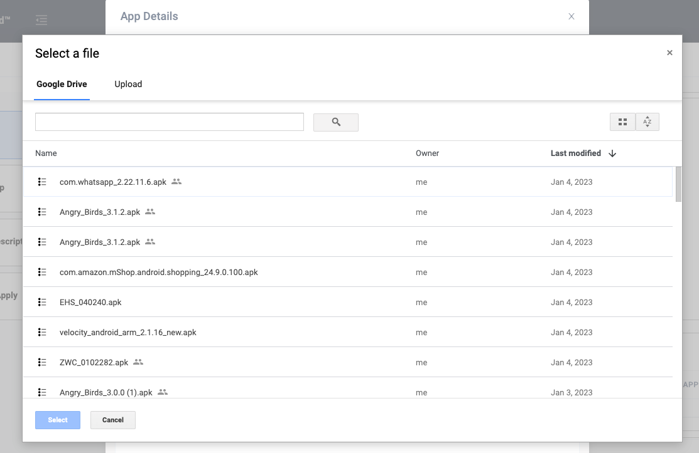
Click image to enlarge; ESC to exit.
Drag or browse to file(s) to be uploaded.
Once all are selected, click the "Upload" button to proceed.
Click image to enlarge; ESC to exit.
If Google Drive is the only available option for your organization from which to deploy apps, go to Google Share instructions (below), then return here to complete the process.
If an FTP/S or HTTP/S server in your organization can be used to store and serve apps:
c. Select "Specified Server" [1] and enter the URL for downloading the app to be deployed into the URL field.
IMPORTANT: Any non-Google URL must contain the FULL PATH and FILE NAME of the app and must initiate download without prompting the user.
d. OPTION 1: Click "Upload" [2] to allow ZDNA to extract app data from the .apk. Then proceed to Step e.
-OR-
d. OPTION 2: Click "No, Enter Manually" to enter app data yourself. Then Skip to Step 3.
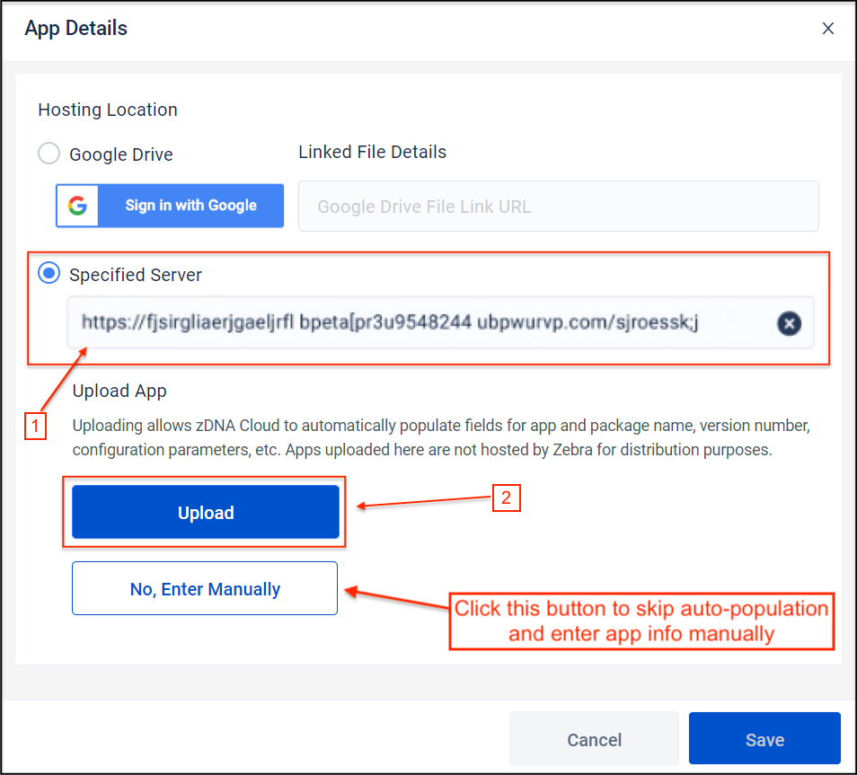
Click image to enlarge; ESC to exit.
e. Navigate to and select app (.apk) and click the "Open" button:
Click image to enlarge; ESC to exit.
While info is extracted from the file, a screen is displayed similar to the image below:
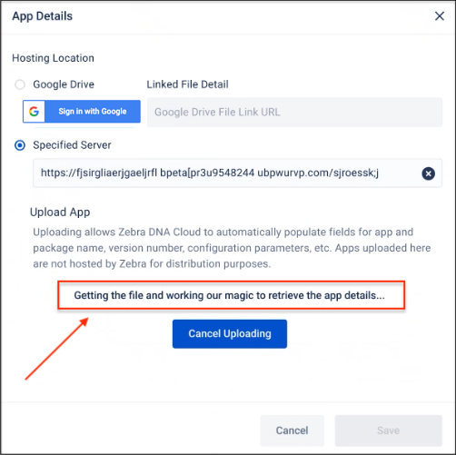
Click image to enlarge; ESC to exit.
3. After "App Package" and "Version" fields are populated:
Enter App Name and additional data as desired, click Save to proceed:
Click image to enlarge; ESC to exit.
4. Confirm addition of app in "My Collection" tab:
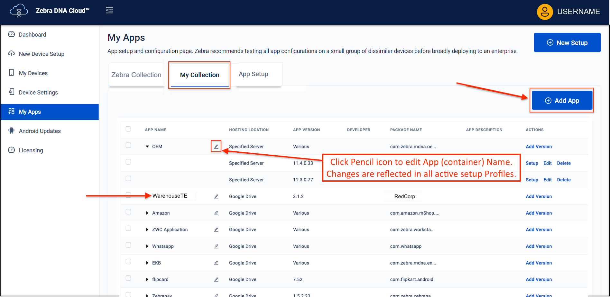
Click image to enlarge; ESC to exit.
DNA Cloud 4.3 (and later) enables Remove and Reapply functions for Bulk Actions directly from App Setup section.
Click image to enlarge; ESC to exit.
App Notes
- For mixed-owner device populations managed by an EMM that uses Google Cloud DPC as the Device Owner, Zebra-app upgrades and some other actions can require 24-48 hours to complete.
- App Profiles MUST be edited and deployed only by a single user at a time.
WARNING: Attempts by multiple users to edit and/or apply app settings simultaneously results in unpredictable behavior. - Individual file size restrictions:
- Application (
.apk) max size = 150MB. - Third-party managed configuration/app restriction max size = 1MB.
- Application (
- When manually adding an app to "My Collection," the "App Version" field accepts ONLY numerical characters and one or more "dot" characters (e.g. "10.1" or "1.2.305"). This field DOES NOT accept alphabetic or other special characters.
- If an app update requires a different package name, the DNA Cloud deployment process uninstalls the older app first, then installs the newer version while preserving existing app data.
- Changing the Google Drive after creating one or more Profiles could render those Profiles read-only and/or produce unpredictable behavior during deployments.
See My Services notes for more information. - A changed Google Drive is indicated by a banner similar to the one shown below (DNA Cloud 2.4 and later).
- Converting any Profile to a Sub-profile (for use in a Master Profile) deletes the original Profile. To prevent this, duplicate the Profile first.
Upgrade an App
To upgrade an app that has already been added to a "My Collection" repository, refer to Add Apps to Collection and click the "Add Version" button to create a Setup Profile. Then deploy as usual.
DNA Cloud cannot "downgrade" an app. To install an older version of a previously installed app, create an App Setup Profile that includes the desired version. Then deploy it as usual.
Create App Setup Profile
Each App Setup Profile contains all the information required to deploy an app and/or its configuration and/or data file(s) to devices.
IMPORTANT: DO NOT create a new Profile for a newer version of an app if a Profile exists for an older version of the same app. Instead, edit the existing Profile to update the app version.
To create a Profile:
Click "New Setup" to begin: 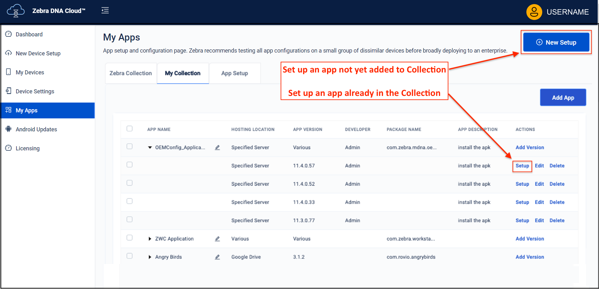 Click image to enlarge; ESC to exit.
Select App and version from the desired collection.
Alternatively, "My Collection" apps can be added "on the fly" using the "Add an App To My Collection" button.
Click "Next" to proceed: Click image to enlarge; ESC to exit.
If there is nothing extra to install, click "Next" to proceed.
Select "Yes" to include app config and/or data file(s) in the setup.
Enter file information and click "Next" to proceed: Click image to enlarge; ESC to exit.Enter a Name and Description for the Profile or use the auto-generated name.
Click "Next" to proceed: Click image to enlarge; ESC to exit.Review the settings. Then select one of the following actions:
- To create a Sub-profile for Profile Deployments, click "Save as Sub-profile" (or Template).
- To deploy settings immediately, click "Apply Now."
- To save App Setup Profile for later deployment, click "Save"
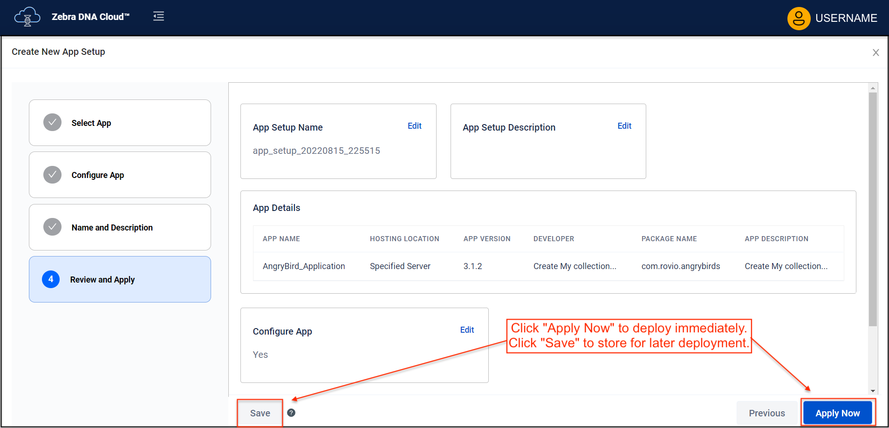
Click image to enlarge; ESC to exit.
- Select an App Setup Profile from the App Setup tab to check its deployment status:
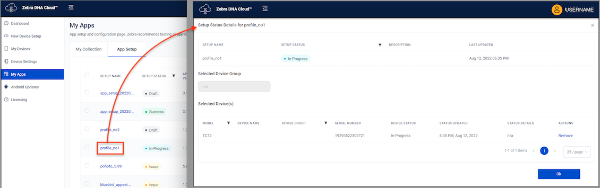
Click image to enlarge; ESC to exit.
Edit an App Setup Profile
ZDNA allows the app version and other info in an app setup Profile to be changed after the Profile has been created, helping to save time when new app versions are released or other changes are needed to an existing deployment.
IMPORTANT: DO NOT edit a Profile that shows an "In-Progress" status for any of its deployments. Before editing, wait until In-Progress status is cleared from all of the Profile's active deployments or cancel In-Progress deployments manually, if necessary.
To edit a Profile:
a. Click "My Apps" to display the lists of app collections and setups.
b. Select "App Setup" tab.
c. Click "Edit" to display contents of the Profile to be edited. 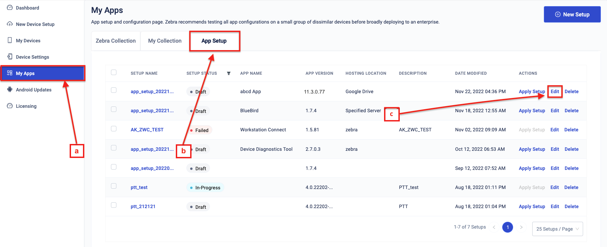 Click image to enlarge; ESC to exit.Select the desired app info to edit.
In the example, "App Details" is selected to allow a change of the app version: Click image to enlarge; ESC to exit.Select the desired app version from the version drop-down (or edit other info as needed).
Click "Next" to proceed.
Click image to enlarge; ESC to exit.Go to Step 3 (above) to complete the process.
Profile Notes
- Each app setup Profile applies to a single app only.
- An app setup Profile may contain:
- An app alone, as selected from an organization's Collection
- An app plus related files for configuration and/or data
- Configuration and/or data files alone (for deployment to devices on which the target app is already installed)
- Removing an app setup Profile from the system or a device removes the app from the device while leaving data files that might have accompanied it, if any.
- The Bulk Delete Action supports no more than 20 App Setup Profiles at a time.†
† Following this action, a page refresh is required to correct the pagination count.
Android Updates
The Android Updates function keeps enrolled devices up to date with the latest Android OS updates and security patches. Devices managed with this feature are subject to the behaviors listed below.
Update Notes
- General Behavior:
- Android Updates are applicable only on enrolled devices.
- For devices not enrolled, the only available Action is to Enroll.
- Bulk Actions:
- Update Action can be performed in bulk on devices of the same or different models.
- Enroll Action can be performed in bulk on devices of the same or different models.
- If combining Enroll and Update Actions in a bulk operation, devices not yet enrolled are enrolled only; devices already enrolled are updated.
- Device Update Status:
- Up to date - Device has all the latest OS updates and security patches. No action is required.
- New Available - Device does NOT have the latest OS updates and/or security patches. Click "Update to Latest" to upgrade.
- Not Enrolled - LifeGuard Over the Air (OTA) service is NOT running on the device. Click "Enroll" to install.
Any activity relating to an Android Update is referred to as a "Job" in ZDNA.
Perform an Update
The Android Update feature supports updates to the latest version (with an option to automatically apply future updates) or to Android versions prior to the latest. Both processes are documented below.
The Android Updates feature is supported only GMS devices (except the non-GMS WS50, which is supported).
Update to the Latest:
1. Select one or more devices to receive an update and click "Update to the Latest":
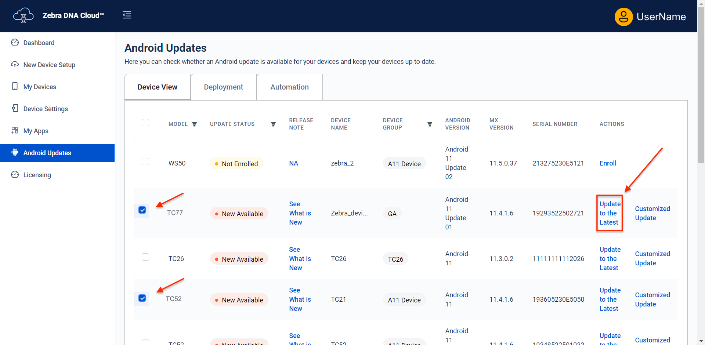
Click image to enlarge; ESC to exit.
2. Enter a Job Name or accept the auto-generated name.
Add a short description to help identify the Job in the future.
Click "Next" when finished:
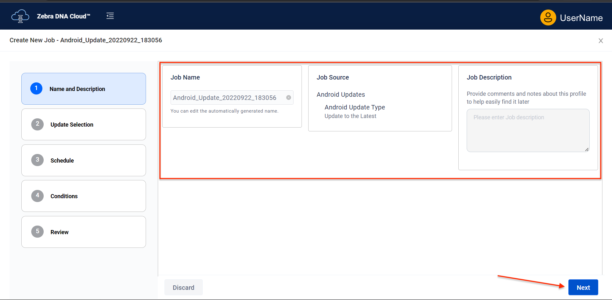
Click image to enlarge; ESC to exit.
3. If multiple device models are selected, choose the desired update for each model.
Start with the model at the top of the list and work downward to avoid unintended results. Learn more.
When all updates are selected, click "Next" to proceed:
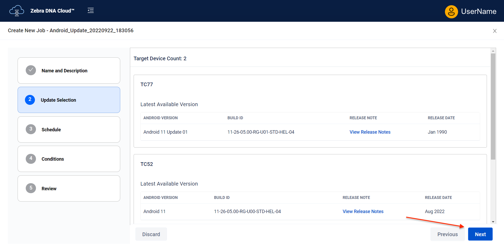
Click image to enlarge; ESC to exit.
4. When finished selecting updates for device models, select the desired Automation Option.
Click "Next" to proceed:
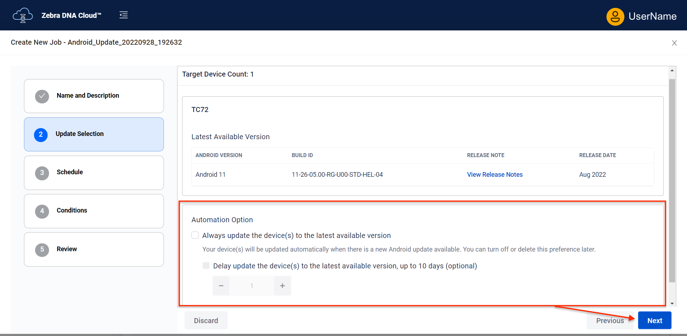
Click image to enlarge; ESC to exit.
5. Select a Schedule for performing the update, if desired. For example, scheduling during "off hours" can help minimize worker disruption.
Scheduling Notes
• Select "As soon as possible" to begin the update immediately upon starting the job (or as soon as devices become available).
• Download attempts interrupted due to network or other issues are repeated every 24 hours for 28 days before reporting failure.
• Unscheduled installations begin within 24 hours of deployment.
• All dates and times are UTC.
After setting desired schedule, click "Next" to proceed:
Click image to enlarge; ESC to exit.
6. Select the conditions under which to perform the update and whether to allow the device user to postpone.
Updates begin only when ALL conditions are met on a given device.
Click "Next" to proceed:
Click image to enlarge; ESC to exit.
7. Review the settings. If necessary, click "Edit" to modify.
Click "Start Job" to deploy settings using the selected timing:
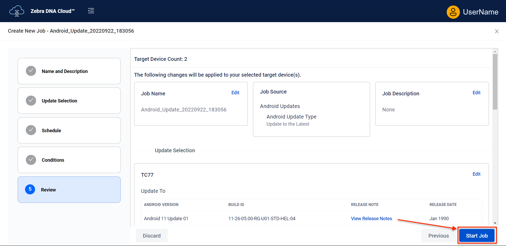
Click image to enlarge; ESC to exit.
8. Monitor the deployment in the Deployment tab, which displays the status of all Android Update jobs:
Click image to enlarge; ESC to exit.
Job Status
- Success (green)- Deployment to device(s) completed as expected
- In Progress (blue) - Deployment is pending on at least one device; no errors are reported
- Issues (yellow) - One or more problems prevented the update from completing successfully
- "Issue (CR)" - Appears briefly when a cancel request is received for an update
- Cancelled (red) - Update deployment has been cancelled
- Created (black) - Appears briefly when an job has been started
Customized Update:
Select one or more devices to receive an update and click "Customized Update": Click image to enlarge; ESC to exit.
Select a compatible update from the list that appears.
Start with the model at the top of the list and work downward to avoid unintended results. Learn more.
When all updates are selected, click "Next" to proceed: 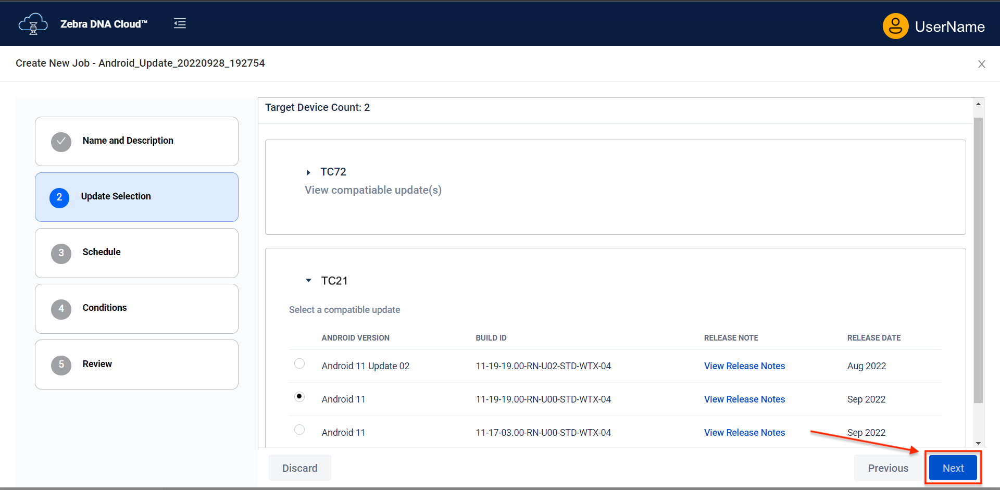 Click image to enlarge; ESC to exit.Proceed with Steps 4–8, in the Android Update section above.
The Android Updates feature is supported only GMS devices (except the non-GMS WS50, which is supported).
Monitor Updates
Click "Open" in the Actions column of the Android Updates page to display the status of device(s) targeted by an individual Update job:
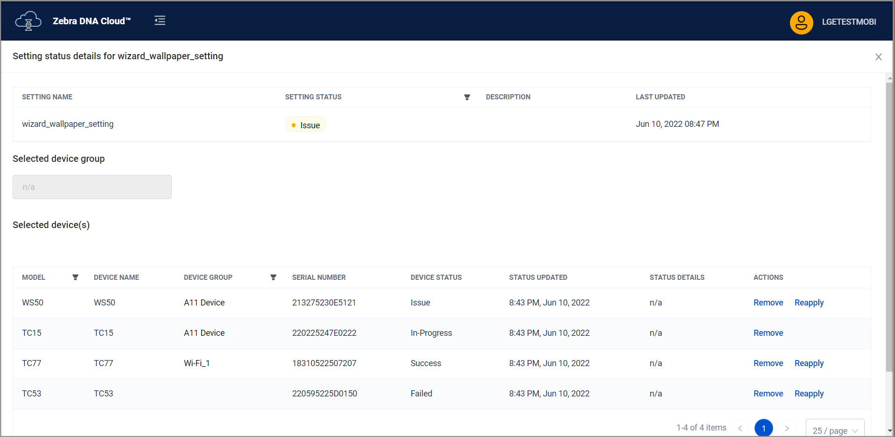
Click image to enlarge; ESC to exit.
Actions
- Open - Displays details of the Update in that row
- Cancel - Cancels an In-Progress Update (disabled after Update is completed)
- Delete - Removes the Update from the deployment Profiles list (available only when status is "Success," "Issue" or "Cancelled")
- Remove - removes the device in that row from the Update job
- Reapply - Attempts to reapply the Update on the device in that row (expires after 7 days)
Design Studio
Zebra Design Studio is a suite of tools for customizing Zebra's Android apps and deploying those customizations through an enterprise, all from within the Zebra DNA Cloud console.
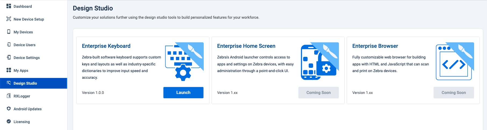
Click image to enlarge; ESC to exit.
Support Tools
The Support Tools section is a container for utility guides useful for administrators and IT staff to analyze and diagose device and system issues, all from within the Zebra DNA Cloud console.
Click image to enlarge; ESC to exit.
Also See
- Setup Guide | Set up an organization and its devices to use ZDNA
- Licensing Guide | Manage, allocate and reclaim licenses for apps and devices
- FAQ | Frequently asked questions about ZDNA
Google Drive
Use these instructions if your organization lacks a server compatible with the "Specified Server" method (above) and/or if Google Drive is the only option available for deploying My Collection apps.
In Google Drive, navigate to the app to be deployed and right-click it: Click image to enlarge; ESC to exit.
Select "Share" from the right-click menu.
Under "General access," select "Anyone with the link" from the drop-down.
Then click "copy link" button:
Click image to enlarge; ESC to exit.a. Paste the copied link into any browser and hit ENTER. A screen appears like the image below.
b. Click the "Download" button, which converts the URL for direct download without a user prompt. Click image to enlarge; ESC to exit.
The converted URL should now include the domaindrive.usercontent.google.comas below:
Click image to enlarge; ESC to exit.Copy the converted link and paste it into the "Specified Server" field shown in Step 2d, above.
Follow remaining steps in that section to finish adding the app to My Collection.
Zebra Storage
DNA Cloud 5.1 introduced Zebra Storage, an alternative to the use of Google Drive for the storage and deployment of apps and related files. File types deemed sensitive (see Notes, below) are automatically encrypted when uploaded and decrypted when downloaded/deployed.
Cybersecurity solutions such as Zscaler might cause errors when uploading some
.apkfiles to Zebra Storage. As a troubleshooting measure, temporarily disable the solution, upload the affected file(s) and reactivate before proceeding.
Storage Notes
- Requires changes to network settings
- Default capacity is 300MB for all file types
- Download allowance is 300MB per device, per month (resets on the 1st of each month)
- Automatically sends admin notifications when storage or download usage reaches 90% of allocated limit
- Auto-encryption/decryption is enabled for the following file types:
.key.pem.crt.der
Activate Zebra Storage
The activation process is performed once per tenant.
In the ZDNA console, select My Services from the User Account drop-down (upper-right corner).
 Click image to enlarge; ESC to exit.
Click image to enlarge; ESC to exit.
Click the "Connect" button to engage the Zebra Storage service. Click image to enlarge; ESC to exit.
If successful, the service status indicator turns green (as below).
Click <- Back (upper-left corner) to return to the ZDNA Dashboard. Click image to enlarge; ESC to exit.
Zebra Storage is now ready to use. Proceed to the next section to populate files for deployment.
Using Zebra Storage
Applications are added to DNA Cloud using Zebra Storage a two-step process: First is to add the .apk file itself, and then to extract and store its version information.
Step I
Click on My Collection to display existing apps and setup Profiles: Click image to enlarge; ESC to exit.
Click the "Add App" button to begin adding apps:
 Click image to enlarge; ESC to exit.
Click image to enlarge; ESC to exit.
With Zebra Storage selected, click the "Browse File" button: Click image to enlarge; ESC to exit.
Select the "Upload" tab to select apps for upload.
Drag and drop app files and/or app-configuration files into the dialog box ~OR~ click "Select files from your device" to browse files on the host PC.
Once all files are selected, click "Upload" button (lower-left corner) to proceed:
Click image to enlarge; ESC to exit.A screen similar to the image below is displayed while uploads are in progress.
DO NOT DISMISS THIS DIALOG before all downloads are completed.
Organizations employing a cybersecurity solution might encounter errors when uploading some.apkfiles to Zebra Storage. Click image to enlarge; ESC to exit.
Step II
Once uploads are completed (following Steps 1–5 above), apps appear under the "Zebra Storage" tab similar to the image below.
To prepare an app for deployment, highlight the app and click "Select" to proceed: To display this screen from the ZDNA Dashboard: My Apps > My Collection > Add App > Browse File
Click image to enlarge; ESC to exit.Scanning begins automatically on the
.apkfile: Click image to enlarge; ESC to exit.After a moment, info obtained from the scan is displayed. Enter additional info as desired and click "Save" when finished: Click image to enlarge; ESC to exit.
The app (renamed "Store0101comms") is ready for deployment.
Notice that apps occupy multiple lines. The top line represents the.apkitself; additional lines represent each app version available for deployment.
Click "Edit" to change a version's data, or "Setup" to create a deployment Profile: _Click image to enlarge; ESC to exit.